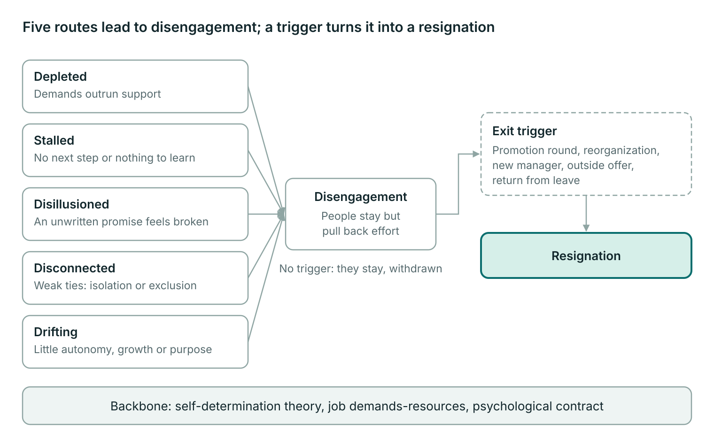
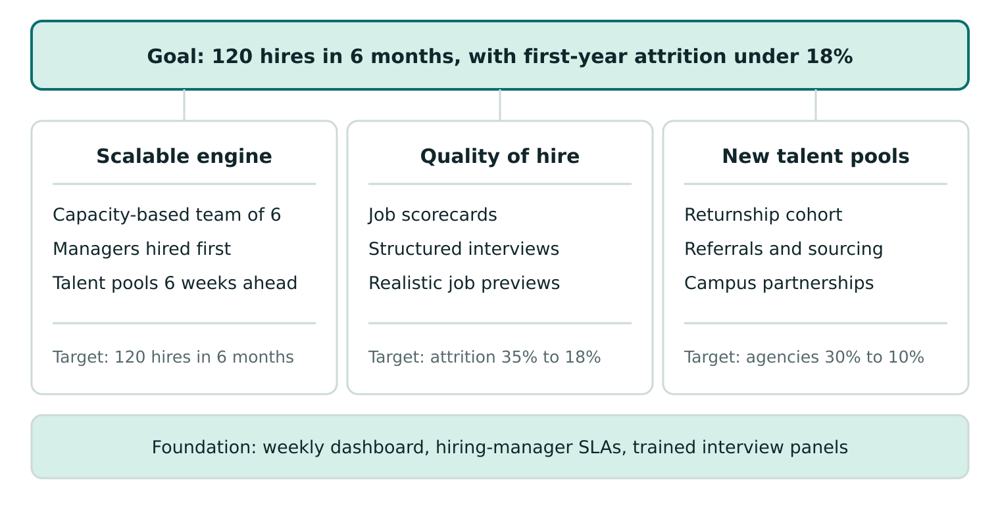

Open to remote roles in healthcare
Healthcare project and product delivery, from requirements to release.
PMP-certified, with 8+ years in digital health. I write the requirements, lead the testing and keep tech, clinical and business teams moving in the same direction, using Agile and Scrum.
Projects
Independent work that brings together my clinical training, project management and an interest in the psychology of work.
Case study · Organizational development
Beyond Employee Engagement
Why do capable, fairly treated people quietly disengage and leave? A diagnostic framework of five pathways and the triggers that turn them into resignations, tested on HR data and turned into a practical playbook.
- 40+ studies reviewed
- Python analysis
- Diagnostic toolkit
- 12-month roadmap

Case study · Digital health adoption
From Enrolment to Everyday Use
India has built digital health infrastructure at unmatched scale. The next phase is everyday clinical use. Six predictable barriers that shape whether clinicians adopt a tool, with a scorecard, a requirements checklist and a rollout playbook to design for adoption.
- ~40 sources cited
- Barrier Map
- Adoption-risk scorecard
- Rollout playbook

Strategy proposal · Talent acquisition
120 Hires, Built to Stay
How I would staff a new 120-person hub in 6 months without repeating 35% first-year attrition: a capacity-based hiring team, a quality-of-hire system and a returnship, stress-tested for what could go wrong.
- Capacity model
- Decision trade-offs
- Stress test
- Returnship design

Experience
Eight years, from running operations to leading delivery for national digital health programmes. Open any role to see the detail.
-
Nov 2024 – Oct 2025
Associate Project Manager (Scrum Master functions)
Personify Health
Led delivery of 3 cross-functional projects, ran Scrum for each team and kept stakeholders informed through dashboards and regular syncs. Named Employee of the Month.
See the detail
- Led end-to-end delivery of 3 cross-functional projects, from initiation to completion, aligned with timelines and business objectives.
- Facilitated sprint planning, daily stand-ups, reviews and retrospectives while coaching team members in Agile and Scrum.
- Built and maintained documentation and dashboards in Jira and Confluence for sprint visibility and stakeholder reporting.
- Identified risks, blockers and dependencies early, and executed mitigation strategies to limit delivery impact.
- Ran weekly, bi-weekly and monthly team syncs and cross-functional status updates.
- Mentored bootcamp candidates over 3 months, supporting talent development and onboarding.
- Recognised as Employee of the Month for performance and leadership.
-
Aug 2022 – Jul 2024
Senior Executive, Projects
ECHO India
Led UAT for the iECHO mobile app on iOS and Android, wrote the requirements and documentation, and onboarded partners and health facilities onto the platform.
See the detail
- Led end-to-end UAT for iECHO across iOS and Android: planning, scope, environment readiness and sign-off with business stakeholders.
- Designed test scenarios, scripts and traceability matrices mapped to the Functional Requirement Specifications (FRS), so every requirement was covered before release.
- Ran UAT cycles with Tech, IT, Training and Quality teams, including daily defect triage, severity classification and re-tests in Jira.
- Bridged business users and engineers: gathered feedback, validated fixes and secured formal UAT sign-off.
- Authored FRS, test cases, defect reports and user manuals.
- Engaged prospective health facilities and developed project strategies with partners, defining scope, milestones and deliverables.
- Identified risks, ran milestone reviews and reported to the Project Manager, with dashboards and reports for stakeholders.
- Revamped Help Centre content and delivered training sessions to onboard partners onto iECHO.
-
Jul 2021 – Jul 2022
Project Consultant, ABDM
IQVIA
Oversaw UAT for the ABHA mobile app on iOS and Android under the Ayushman Bharat Digital Mission, and supported private partners integrating with ABDM.
See the detail
- Defined the UAT strategy, built test plans and validated production readiness for the ABHA app on iOS and Android.
- Wrote test cases and scripts from the FRS and ran functional and end-to-end scenarios to certify quality before each release.
- Compiled defect reports, prioritised by severity and impact, and triaged issues to the tech team in Jira. Tracked defect burn-down, retested fixes and signed off release readiness.
- Developed FRS, milestone reports, UAT logs and user manuals, and ran quality checks before production release.
- Partnered with UI/UX to design wireframes and mock screens for state-level demonstrations.
- Helped private stakeholders integrate with the ABDM environment using sandbox, and shared APIs to streamline the process.
- Revamped the Grievance Redressal system to improve user experience and operational efficiency.
-
Feb 2018 – Jun 2021
Operations Manager and CRM Lead
CareDose
Led a team of 6 across operations and customer relations, and improved the processes behind new product launches.
See the detail
- Managed operations and CRM, leading a team of 6 to achieve departmental goals.
- Converted leads into customers and grew the customer base, while serving as the main contact for customer queries and retention.
- Led cross-functional problem-solving on process improvements and new product launches.
- Developed and implemented new processes that improved workflow efficiency and productivity.
- Ran quality checks before dispatch, and guided and trained operations staff.
Skills
The methods, the healthcare context and the tools I use every day.
Delivery
- Scrum
- Kanban
- Waterfall
- SAFe awareness
- Sprint planning
- Backlog refinement
- Risk management
Product and quality
- Requirements (FRS)
- UAT
- Test cases
- Wireframes with UI/UX
- User manuals
- Release readiness
- Partner training
Digital health
- ABDM / ABHA
- Mobile health apps
- API and sandbox integration
- Facility partnerships
People
- Stakeholder communication
- Mentoring and coaching
- Cross-functional collaboration
- Continuous improvement
Tools
- Jira
- Confluence
- Trello
- Atlas
- Excel
- PowerPoint
Education and certification
A clinical foundation, a healthcare management degree and the global standard in project management.
Hiring for a healthcare project or product role?
I'm looking for a remote team building digital health products. Send me a note and I'll reply promptly.